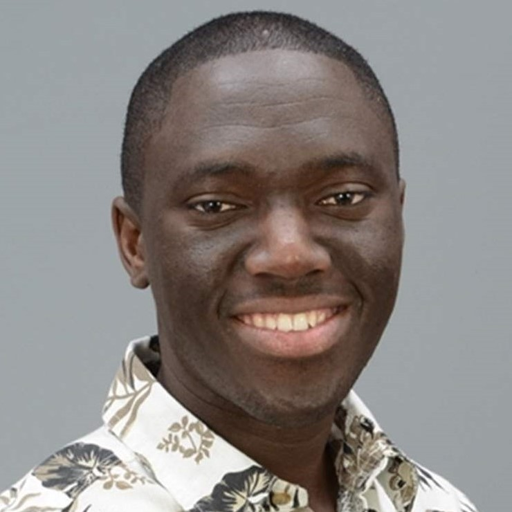

Kenneth K. Fletcher, Ph.D.
Assistant Professor of Computer Science
Office: Science Building, S-3-075 | Phone: +1.617.287.3832 | Email: kkfletch [at] cs [dot] umb [dot] edu
Short Bio
A computer scientist and software engineer, Kenneth Fletcher is an Assistant Professor of Computer Science at University of Massachusetts Boston (UMass Boston). Prior to joining UMass Boston, Kenneth worked with Product Innovation and Engineering as a Software Engineer. His research spans Service and Cloud Computing, Software Engineering and Metal Additive Manufacturing. He has been a technical reviewer for several journals and conferences including the IEEE Transactions on Service Computing (TSC), IEEE Transactions on Network and Service Management (TNSM), IEEE Conference on Service Computing (SCC) and IEEE Conference on Web Services (ICWS), just to name a few.
Upcoming Events & News
My Latest Research
- Detecting "Fake" Likes/ Followers in Social Network using Personalized Preferences and Machine Learning.
- Cloud Additive Manufacturing Simulation using Amanzon AWS.